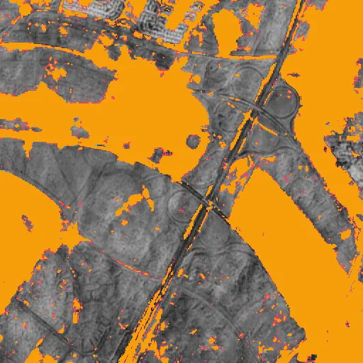
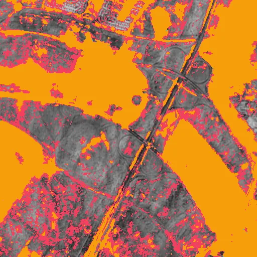
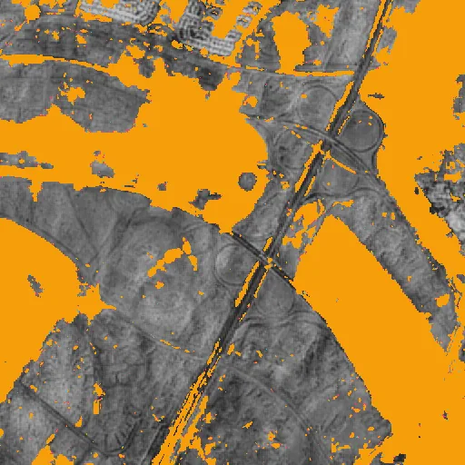
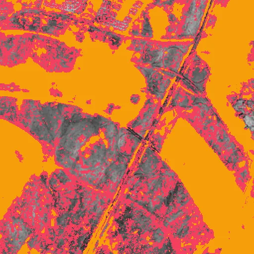
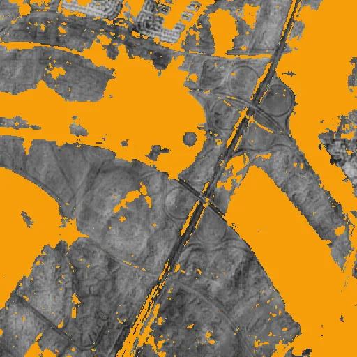
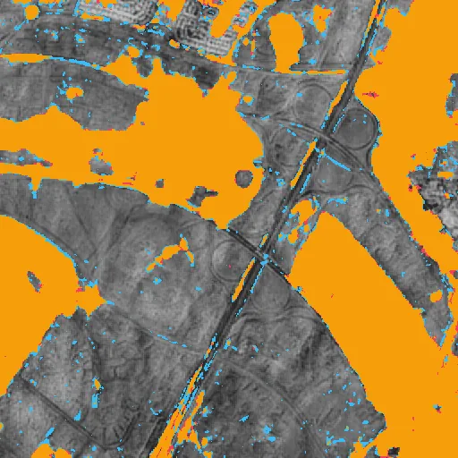

Benchmark / Use cases / Change detection / Results / change-07
change-07
Compression ratio and change_iou
Each point is a bound on the root-mean-square error, written next to it in codes of the quantised embedding, on this sample.
GeoZL PIVCOGeoZL PFORJPEG XL
Decoded change maps
The result on the compressed copy at each error bound, in codes of the quantised embedding.changed on bothlostnew
GeoZL PIVCO
 RMSE ≤ 1 codes, measured 0.817
RMSE ≤ 1 codes, measured 0.817
3.9× · change_iou +0.990 RMSE ≤ 2 codes, measured 1.41
RMSE ≤ 2 codes, measured 1.41
5.0× · change_iou +0.982
RMSE ≤ 4 codes, measured 3.73
8.6× · change_iou +0.927
RMSE ≤ 8 codes, measured 7.89
13.8× · change_iou +0.670 RMSE ≤ 16 codes, measured 15.5
RMSE ≤ 16 codes, measured 15.5
22.8× · change_iou +0.548GeoZL PFOR
RMSE ≤ 1 codes, measured 0.817
2.7× · change_iou +0.990
RMSE ≤ 2 codes, measured 1.41
3.1× · change_iou +0.982 RMSE ≤ 4 codes, measured 3.73
RMSE ≤ 4 codes, measured 3.73
4.1× · change_iou +0.927 RMSE ≤ 8 codes, measured 7.89
RMSE ≤ 8 codes, measured 7.89
5.8× · change_iou +0.670
RMSE ≤ 16 codes, measured 15.5
9.4× · change_iou +0.548 JPEG XL

RMSE ≤ 1 codes, measured 0.989
4.7× · change_iou +0.988RMSE ≤ 2 codes, measured 1.98
9.6× · change_iou +0.975RMSE ≤ 4 codes, measured 3.97
27.5× · change_iou +0.948RMSE ≤ 8 codes, measured 7.35
95.6× · change_iou +0.892
RMSE ≤ 16 codes, measured 7.63
104.6× · change_iou +0.888